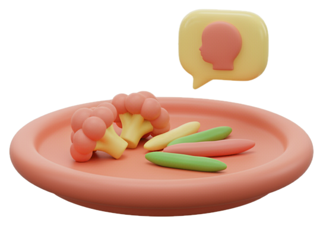

Percebe porque é que o teu filho não come certos alimentos e descobre o que pode estar a alimentar este problema, para o começares a ajudar da forma certa.
Já preparaste refeições diferentes só para o teu filho.
Já tentaste brincar com os alimentos, cozinhar em conjunto ou comprar pratos e talheres "especiais".
Já pediste "só mais uma dentada".
Já escondeste legumes na comida ou recorreste a ecrãs para conseguir que ele(a) comesse.
Enquanto ouves frases como "quando tiver fome, come" ou "isso é só uma fase", que só te deixam mais ansiosa(o) e confusa(o).
E, apesar de todo o esforço...
Continuas preocupada(o) com aquilo que ele(a) não come.
Ficas sem saber o que fazer quando o teu filho(a) não quer comer.
Tens medo que lhe faltem nutrientes importantes.
Evitas refeições fora de casa porque nunca sabes como vai correr.
Sentes-te frustrada porque cada refeição é uma batalha.
E, muitas vezes, perguntas-te se estás a falhar como mãe ou como pai.
Se te revês nesta realidade, esta masterclass foi pensada para ti.
No final, vais...

Compreender melhor o teu filho e aquilo que pode estar por trás da recusa de determinados alimentos.
Perceber porque é que algumas estratégias podem funcionar com umas crianças e não com outras.
Saber identificar o que são mitos e crenças que não ajudam as crianças a comer (e, muitos deles, só pioram o problema)
Uma checklist simples para te ajudar a distinguir aquilo que pode fazer parte do desenvolvimento alimentar normal daquilo que merece uma atenção mais especializada.
Descobre porque é que alguns dos conselhos que toda a gente dá podem não estar a ajudar o teu filho(a) e aprende a distinguir os mitos daquilo que é realmente apoiado pela ciência.
7€
IVA incluído
Inclui:
Todas as crianças têm o direito de ser compreendidas nas suas dificuldades alimentares e de viver refeições tranquilas e felizes.
É por acreditar nisto que decidi disponibilizar esta masterclass por um valor simbólico, para que o maior número possível de famílias possa ter acesso a informação baseada em ciência e começar a olhar para a alimentação dos seus filhos com mais clareza e confiança.
Sou Nutricionista Pediátrica (CP n.º 2069N), mãe de duas crianças e, antes de tudo isto, fui uma criança seletiva. Daquelas que fugia da mesa, demorava uma eternidade a comer, e que ainda hoje se lembra da ansiedade que sentia perante algumas refeições.
Talvez por isso este tema me seja tão próximo.
Cresci e, meio que por acaso, a nutrição escolheu-me. Sou Nutricionista (CP n.º 2069N) há 13 anos, Pós-Graduada em Nutrição Pediátrica e Escolar, Profissional de Saúde Neurocompatível® e tenho formação na Get Permission Approach®, uma abordagem internacional para crianças com recusa e seletividade alimentar, que procura compreender a criança antes de intervir, ajudando as famílias a construir refeições mais tranquilas e positivas.
Acompanho diariamente famílias que vivem exatamente aquilo que talvez estejas a viver agora: preocupação, frustração e a sensação de não saber o que fazer para ajudar o filho a comer. E compreendo bem esta realidade: eu própria já passei (e continuo a passar) por desafios com a alimentação dos meus filhos.
Acredito que todas as crianças merecem gostar de comer e ser compreendidas nas suas dificuldades. As refeições devem ser momentos de encontro, partilha, ligação e nutrição, e não uma fonte constante de stress e conflito.
Sei que o problema das famílias não é falta de esforço. É não compreenderem o que está realmente por trás da recusa alimentar.
É isso que vos quero mostrar nesta aula.
Se estás cansada(o) de procurar mais truques e dicas na internet e queres finalmente perceber o que está por trás da recusa alimentar do teu filho, junta-te a mim nesta aula.
Quero aceder agoraNão importa se já insististe, negociaste, escondeste legumes na comida ou ligaste a televisão para conseguir que o teu filho comesse.
Se fizeste alguma destas coisas, foi porque estavas a tentar ajudá-lo com as ferramentas e a informação que tinhas naquele momento.
O nosso objetivo nesta aula é compreender porque é que algumas estratégias podem funcionar com umas crianças... e não com outras.
Para mães e pais de bebés e crianças entre os 12 meses e os 6 anos que recusam alimentos ou têm uma alimentação limitada. Desde crianças com seletividade leve e normal para a idade até crianças com uma restrição alimentar mais marcada (em que aceitam apenas 5-6 alimentos diferentes).
Durante 3 meses. Podes assistir e rever a aula sempre que precisares.
Não. É uma aula educativa.
Sim. Aliás, esta aula foi pensada precisamente para famílias que sentem que já experimentaram de tudo e continuam sem perceber porque é que nada parece resultar.
Se te sentes assim, quero que saibas que não estás sozinha(o). A maioria das famílias que acompanho chega exatamente com esse sentimento.
O objetivo desta aula não é dizer-te o que devias ter feito. É ajudar-te a compreender melhor o teu filho(a), para que possas tomar decisões com mais segurança e menos culpa a partir de agora.
Sim. Esta aula não substitui uma avaliação individual, mas vai ajudar-te a compreender melhor a recusa alimentar, a olhar para este desafio de uma forma diferente e a perceber porque é que nem sempre existem soluções iguais para todas as crianças.
Esta masterclass foi pensada precisamente para pais que sentem que já experimentaram muitas estratégias, mas continuam sem perceber porque é que nada parece resultar. O foco não será dar mais uma lista de dicas, mas ajudar-te a compreender o problema antes de escolher qualquer estratégia.
Esta masterclass vale mais do que 7€. Mas acredito que todas as crianças têm o direito de se sentir seguras e compreendidas nas suas dificuldades alimentares. E acredito que todos os pais e cuidadores merecem sentir-se informados e capazes de entender o que está por trás do comportamento alimentar dos seus filhos.
Nenhuma família devia ficar sem acesso a informação baseada em ciência por causa do preço.
Foi por isso que decidi disponibilizar esta masterclass por apenas 7€.
O meu objetivo é que o maior número possível de famílias possa compreender melhor o que está por trás da recusa alimentar da criança, aliviar a culpa que tantas vezes acompanha este desafio e começar a olhar para as refeições com mais tranquilidade, ligação e confiança.